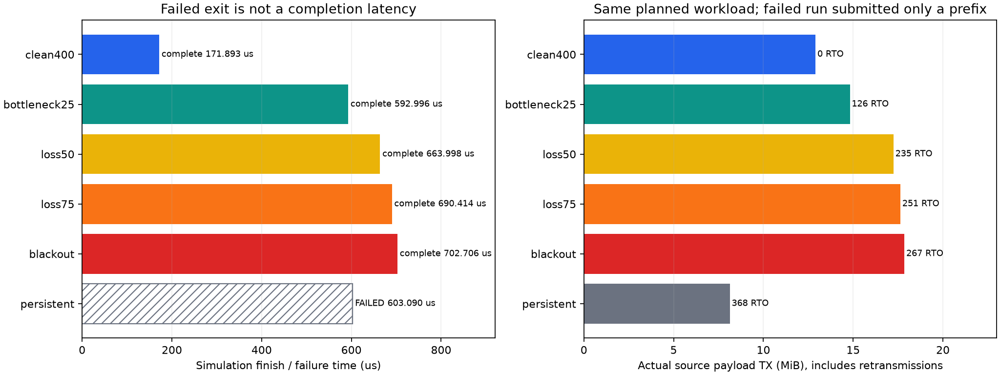
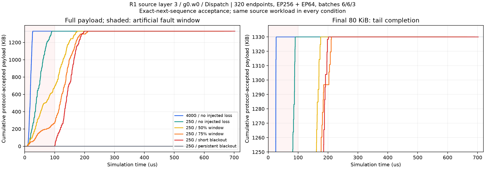
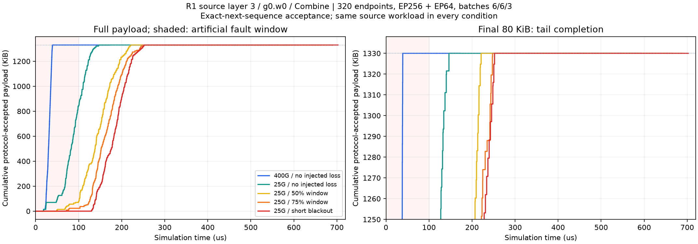
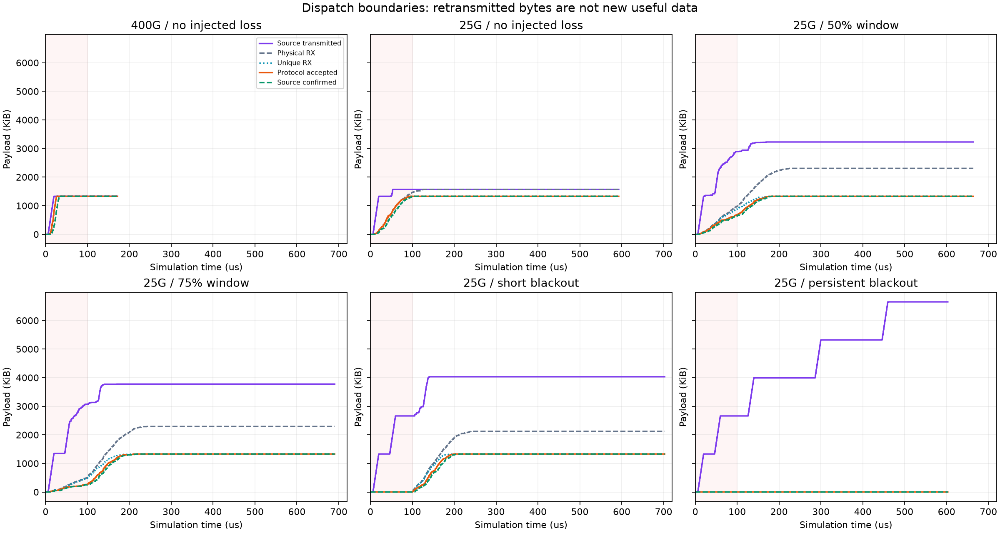
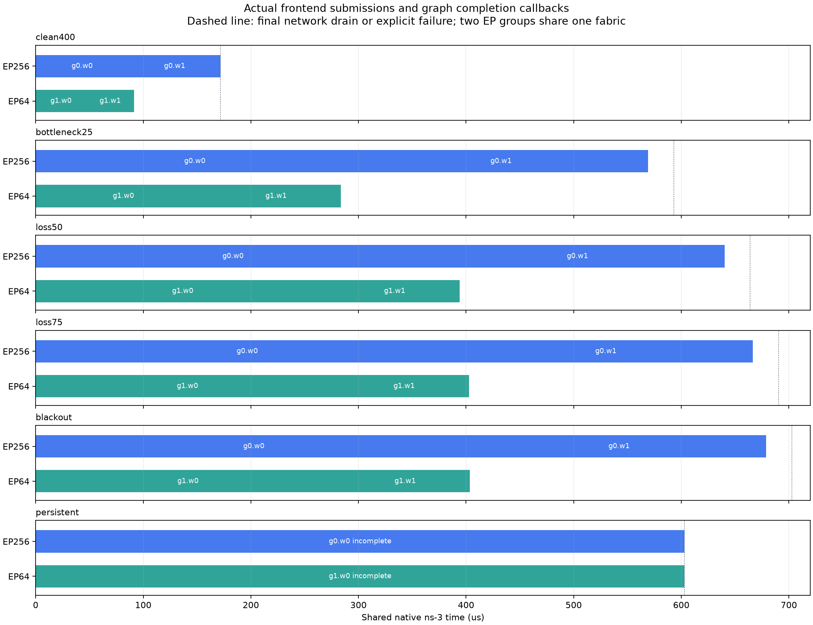

2026-10-28 · 实际SimAI调度 + 单个原生ns-3网络 · 六条件各运行一次
故障很严重时，MoE通信究竟怎样停顿、恢复与失败？
已用15份真实专家选择构造并发任务。五个条件恢复完成；持续全丢明确失败。图中的“有效到达”只累计接收协议按顺序接受的新字节，重传与乱序丢弃不会重复增加进度。
50%/75%指前100µs内的周期性人工数据丢包；全观察期比例另列。这不是生产网络丢包率，也不能说明拥塞自然造成了这些丢包。当前工作是可核查的故障基准，不是新恢复算法的收益证明。
实验究竟用了什么？
真实来源：core12345/MoE_expert_selection_trace，cognitivecomputations/DeepSeek-R1-AWQ/mmlu。来源目录经用户确认，本地原件哈希已核；下载revision未知，未声称远端版本身份已验证。320个物理端点中，完成条件实际有218个端点发送或接收数据，不能写成320卡满载。
所有条件的完整计划为13,533,184有效字节、790条消息；持续黑洞只提交92条消息、1,705,984字节，后续任务没有生成或执行。不能用失败运行的较少工作量比较吞吐。
结果：带宽与故障分别增加多少等待？
固定请求与部署时，上层400G→25G，网络终态从171.893µs增至592.996µs。相对25G无人工丢包，50%、75%、短时全丢分别额外增加71.002、97.418、109.710µs（约12.0%、16.4%、18.5%）。这些是故障代价，不能直接当成某项优化可实现的收益。
持续黑洞在603.090µs重试耗尽时终止；有效接受始终为0。斜线条表示失败退出，不能当作较快完成。

PDFSVG
累计有效到达：先看整体，再看最后一段
固定切片为g0.w0、原层3、EP256。Dispatch与Combine各有1,361,920目标有效字节。横轴是共享网络绝对时间；每个rank遵循自身依赖，因此一部分Combine可能在其他rank的Dispatch全部收齐前开始。红色底纹为前100µs故障窗口。

PDFSVG

持续黑洞没有执行到Combine，图中不画一条虚构的Combine曲线。75%窗口的选定Dispatch反而比短时全丢略晚收齐，不能按配置丢包率直接线性推断时延；具体消息受损和排队的作用还需进一步分析。
为什么“包已经到了”不等于任务能继续？
紫线是源端发送的所有payload，包含重传；灰线是目标物理收到的payload；蓝线将同一字节去重；橙线是协议按连续序号接受的字节；绿线是源端收到的累计确认。乱序包可以物理到达，却被当前Go-Back-N风格接收端丢弃。

PDFSVG
并发是否真的发生在同一个网络？
两组EP的首轮任务均在0ns提交给同一个native进程。逐包核算的最大未确认消息数为92至142。图中后续轮次由各自前一轮真实完成回调解锁；竖虚线为网络排空或失败退出，不能与图完成时刻混用。

拥塞、恢复与一个需要改进的问题
25G无人工丢包仍有126次RTO和约1.915MiB重复发送，400G条件为0。其中86次超时时，已经有能推进该消息确认进度的ACK由目标发出、尚在返回途中。例如消息109：44.535µs发出确认9000字节的ACK，49.619µs源端超时，50.597µs才收到该ACK。这是实际包与定时器记录的关联，不是新增仿真。
慢链路排队和反馈延迟可能超过固定40µs初始RTO，引发不必要重传；需要用后续RTO对照验证可减少的重复发送和任务时延，而不能把这些全部归为故障丢包。已有ACK在途也不证明该消息后续所有字节都无缺失；超时等待区间不能简单相加为可消除的任务收益。
实际记录显示ECN/DCQCN反馈；短时全丢和持续全丢各有PFC暂停/恢复观测。队列峰值不一定随时延上升：25G更显著的变化是队列占用持续时间与积分。CE包计数包括重传；失败未ACK消息没有DCQCN终态快照，缺失不能解释为完全没有网络拥塞。当前自然MMU溢出存在观测盲区，人工注入计数不等于所有自然丢包。
RDMA原来有什么，我们补了什么？
这里模拟RoCE风格机制，不是商用NIC固件或完整RoCE协议栈。当前直接收益是把输入、部署、网络与故障结果连起来；尚未证明新的优化方法优于较强基线。
逐轮条件与原始分析入口
独立逐包核验真实来源与哈希服务输入交付文件哈希
每轮包含scenario.json与中文scenario.md；data目录保存逐包明细压缩CSV、累计曲线CSV、端点统计与切片summary。页面完全离线，无外部脚本或网络请求。
独立核验覆盖426,742个包事件、8,259行曲线。全部成功条件通信图字节哈希相同；失败只核已生成图和实际提交消息。六条件各执行一次，不代表统计置信区间或生产SLA。
下一步：固定拓扑和工作量，对比更适合慢链路的RTO设置，再评估热点任务组织。先排除基线定时器配置影响，才能声称MoE专用方法有额外收益。完整输入和执行预算见实验目录protocol.md；复现需同一批原始路由，本网页不携带原始数据文件。